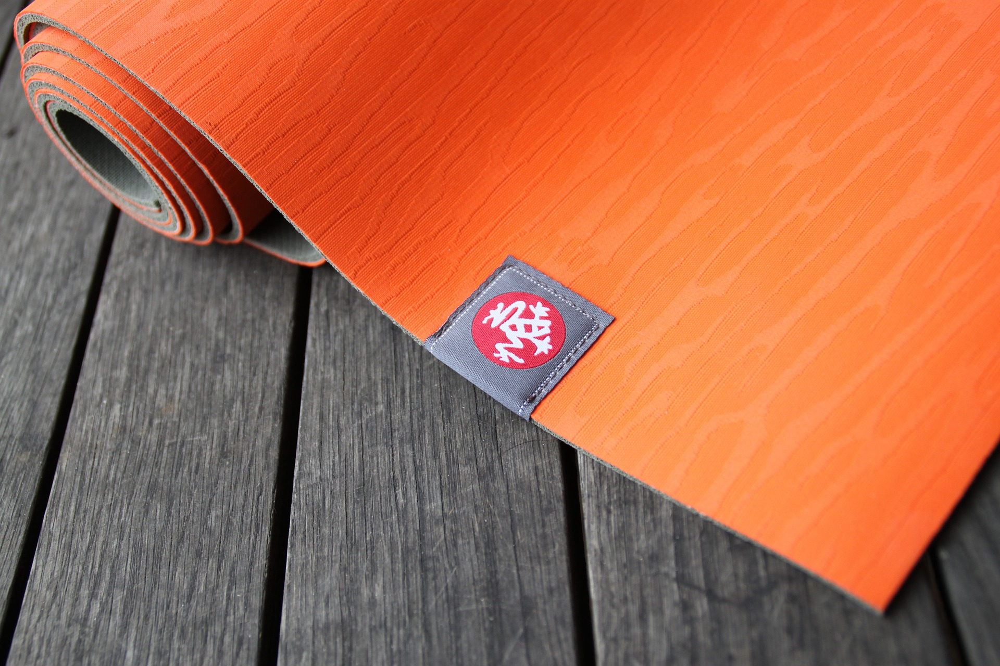

Yoga Classes
- Surya Namaskaram
- Practised during sunrise, facing the Sun. This excercise activates the enyzme and hormonal system our body. From the ancient times the sages has always started the yoga from the this excercise.
- Adho Mukha Svanasana
- Downward Dog has positive effects on the musculoskeletal system. It stretches the hamstring and calf muscles in the backs of the legs, and builds strength in the shoulders.
- Anulom Vilom Pranayam
- Anulom vilom is a type of alternate nostril breathing used in the practice of yoga. Improves concentration, spiritual power and memory strength.Strengthens the lungs and keeps it from diseases.Calms the mind and relieves mental and physical stress.